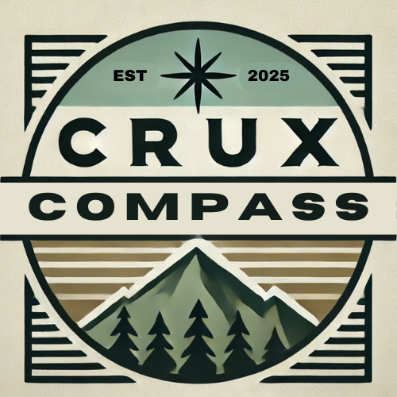
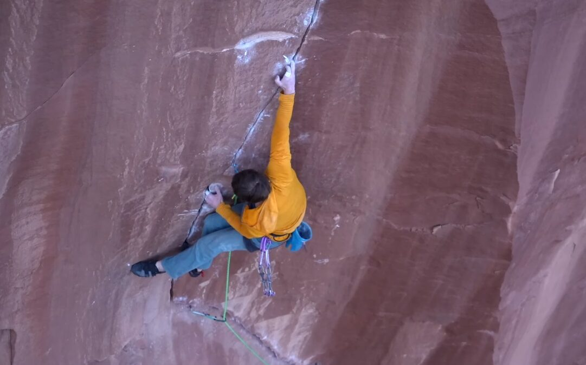

Crux Compass
The Climbing Hub
Crux Compass is your ultimate resource for climbing enthusiasts. From the latest sends on iconic routes to tailored recommendations for the best climbs around the world, we’re here to inspire and guide your climbing journey. Whether you're scaling a boulder, tackling a gym problem, or ascending a towering crag, we’ve got you covered.
Climbs and Routes
Discover the newest climbs sent by the global climbing community. Explore details about where to find them, who sent them, and their origin stories.
One of the most groundbreaking ascents recently was Will Bosi’s send of Burden of Dreams (V17) in Finland. In an interview, Bosi described it as one of the hardest things I’ve ever done
. His ascent makes him one of the few climbers to complete this legendary boulder problem.
Submit your own climb!
Climbing Destinations
- Yosemite - The birthplace of big-wall climbing
- Red River Gorge - Kentucky's sandstone pump fest
- Red Rocks - World class multi-pitch and sport climbing
- Indian Creek - The mecha of crack climbing
- Fontainebleau - Legendary sandstone bouldering

Climbing Terminology
Climbing has a rich vocabulary that varies by region. Here are a few key terms:
- Crux
- The hardest move or sequence on a climb.
- Beta
- Climbing information or advice about a route, often shared by other climbers.
- Rotpunkt
- A German term meaning "redpoint," referring to climbing a route cleanly from the ground without falls after practicing it.
Find Climbing Nearby
Search for climbing opportunities wherever you are
gyms
crags
boulders
Climbing Safety
Warning: Climbing is dangerous. Always use proper safety gear and be aware of route conditions before attempting a climb.
What is this? Some kind of safety device?– Alex Honnold - Yosemite Climber
Upcoming Events
Join our next climbing trip on to Red River Gorge! Sign up now to experience some of the best climbing in the world.
It goes, boys– Lynn Hill - Yosemite Climber
| YDS | Sport Climbing | Trad (British) | |
|---|---|---|---|
| French | British | ||
| 5.10a | 6a | Moderate | VS 4b |
| 5.11b | 6c | HVS | S 4c |
| 5.12a | 7a | E1 | VS 4c |